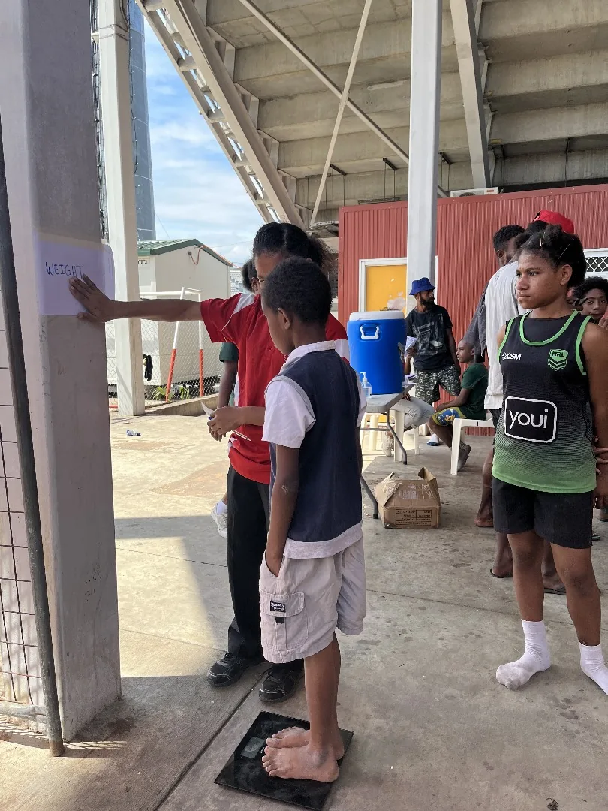
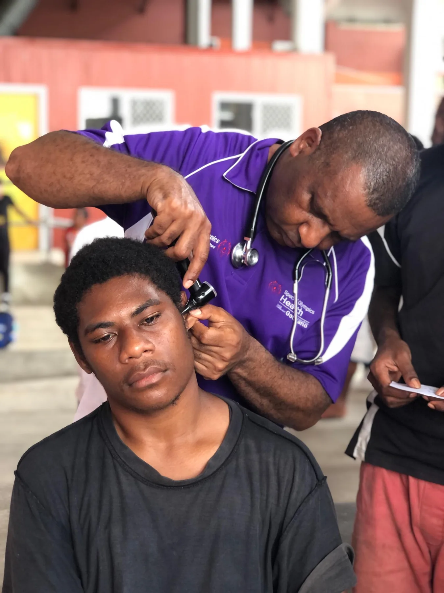

Take part
Join inclusive health and wellness activities.
HEALTHY COMMUNITIES
Health and wellness opportunities support athletes to be active, informed and connected to care.
Ask about this program

HEALTHHEALTH · ACCESS · WELLBEING
Healthy Communities activities bring health partners closer to athletes. Screening and education can help people understand their health and connect with support.
Join inclusive health and wellness activities.
Explore health information in an accessible setting.
Bring athletes, families and health partners together.